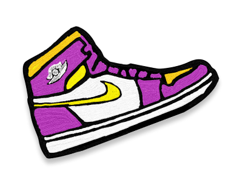

<!--
    SENAC - TADS Matutino Turma A - 4° semestre - Desenvolvimento Web
    Projeto: Drip Micro Tenis
    Aluno: Gabriel de Melo Silva e Kevin de Sousa Santos
    Professor: Bruno Oliveira
-->
<!DOCTYPE html>
<html lang="pt-br"/>
<head>
  <meta charset="UTF-8"/>
  <meta name="viewport" content="width=device-width, initial-scale=1.0"/>
  <link rel="stylesheet" href="/public/css/global.css"/>
  <link rel="stylesheet" href="/public/css/normalize.css"/>
  <link rel="stylesheet" href="index.css"/>
  <title>Login</title>
</head>
<body>
  <section class="cabecalho">
    
    
  </section>
  <section class="conteudo">
    <div class="campoLogin">
      <h1>LOGIN</h1>
      
      <input class="usuario" type="text" placeholder="Usuário"/>
      
      <input class="senha" type="password" placeholder="Senha"/>
      <input class="entrar" type="button" value="ENTRAR">
    </div>
  </section>
</body>
</html>